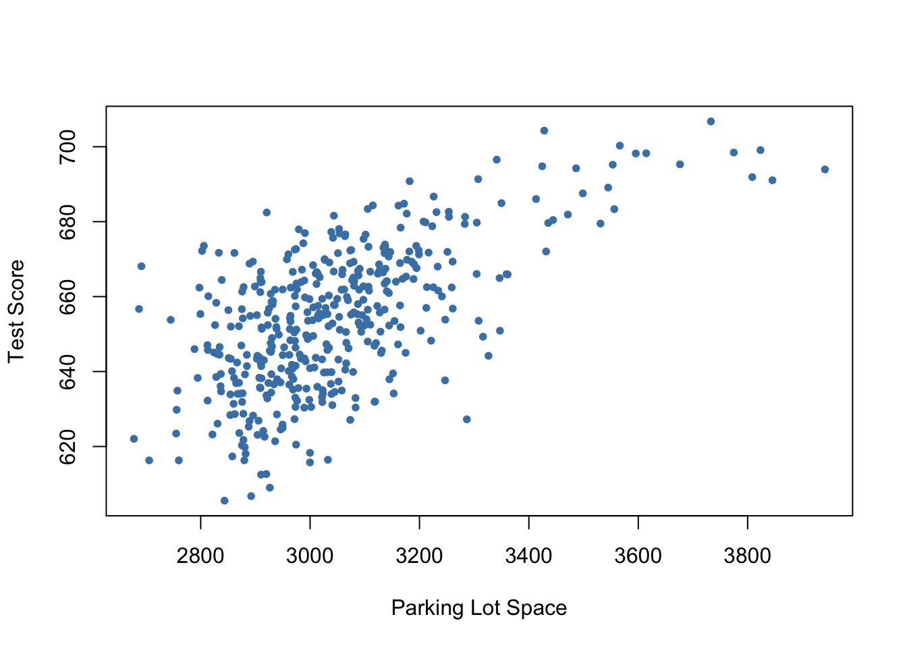

7 Hypothesis Tests and Confidence Intervals in MR Models
This chapter discusses methods that allow to quantify the sampling uncertainty in the OLS estimator of the coefficients in multiple regression models. The basis for this are hypothesis tests and confidence intervals which, just as for the simple linear regression model, can be computed using basic R functions. We will also tackle the issue of testing joint hypotheses on these coefficients.
Make sure the packages AER (Christian Kleiber and Zeileis 2008) and stargazer (Hlavac 2022) are installed before you go ahead and replicate the examples. The safest way to do so is by checking whether the following code chunk executes without any issues.
7.1 Hypothesis Tests and Confidence Intervals for a Single Coefficient
We will first discuss how to compute standard errors, test hypotheses and construct confidence intervals for a single regression coefficient \(\beta_j\) in a multiple regression model. The basic idea is summarized in Key Concept 7.1.
Key Concept 7.1
Testing the Hypothesis \(\beta_j = \beta_{j,0}\)
Against the Alternative \(\beta_j \neq \beta_{j,0}\)
- Compute the standard error of \(\hat{\beta_j}\).
- Compute the \(t\)-statistic, \[t^{act} = \frac{\hat{\beta}_j - \beta_{j,0}} {SE(\hat{\beta_j})}\].
- Compute the \(p\)-value, \[p\text{-value} = 2 \Phi(-|t^{act}|)\]
Testing a single hypothesis about the significance of a coefficient in the multiple regression model proceeds similarly to the process in the simple regression model.
You can easily see this by inspecting the coefficient summary of the regression model
\[ TestScore = \beta_0 + \beta_1 \times STR \beta_2 \times english + u \]
already discussed in Chapter 6. Let us review this:
model <- lm(score ~ STR + english, data = CASchools)
coeftest(model, vcov. = vcovHC, type = "HC1")
#>
#> t test of coefficients:
#>
#> Estimate Std. Error t value Pr(>|t|)
#> (Intercept) 686.032245 8.728225 78.5993 < 2e-16 ***
#> STR -1.101296 0.432847 -2.5443 0.01131 *
#> english -0.649777 0.031032 -20.9391 < 2e-16 ***
#> ---
#> Signif. codes: 0 '***' 0.001 '**' 0.01 '*' 0.05 '.' 0.1 ' ' 1You can verify that these quantities are computed as in the simple regression model by manually calculating the \(t\)-statistics or \(p\)-values using the provided output above and using R as a calculator.
For example, using the definition of the \(p\)-value for a two-sided test as given in Key Concept 7.1, we can confirm the \(p\)-value for a test of the hypothesis that the coefficient \(\beta_1\), the coefficient on size, to be approximately zero.
# compute two-sided p-value
2 * (1 - pt(abs(coeftest(model, vcov. = vcovHC, type = "HC1")[2, 3]),
df = model$df.residual))
#> [1] 0.01130921Key Concept 7.2
Confidence Intervals for a Single Coefficient in Multiple Regression
A \(95\%\) two-sided confidence interval for the coefficient \(\beta_j\) is an interval that contains the true value of \(\beta_j\) with a \(95 \%\) probability; that is, it contains the true value of \(\beta_j\) in \(95 \%\) of all repeated samples. Equivalently, it is the set of values of \(\beta_j\) that cannot be rejected by a \(5 \%\) two-sided hypothesis test. When the sample size is large, the \(95 \%\) confidence interval for \(\beta_j\) is \[\left[\hat{\beta_j}- 1.96 \times SE(\hat{\beta}_j), \hat{\beta_j} + 1.96 \times SE(\hat{\beta_j})\right].\]
7.2 An Application to Test Scores and the Student-Teacher Ratio
Let us take a look at the regression from Section 6.3 again.
Computing confidence intervals for individual coefficients in the multiple regression model proceeds as in the simple regression model using the function confint().
model <- lm(score ~ STR + english, data = CASchools)
confint(model)
#> 2.5 % 97.5 %
#> (Intercept) 671.4640580 700.6004311
#> STR -1.8487969 -0.3537944
#> english -0.7271113 -0.5724424To obtain confidence intervals at another level, say \(90\%\), just set the argument level in our call of confint() accordingly.
confint(model, level = 0.9)
#> 5 % 95 %
#> (Intercept) 673.8145793 698.2499098
#> STR -1.7281904 -0.4744009
#> english -0.7146336 -0.5849200The output now reports the desired \(90\%\) confidence intervals for all coefficients.
One drawback of using confint() is that it doesn’t utilize robust standard errors for calculating the confidence interval. To create large-sample confidence intervals that account for robust standard errors, you can easily do manually using the following approach.
# compute robust standard errors
rob_se <- diag(vcovHC(model, type = "HC1"))^0.5
# compute robust 95% confidence intervals
rbind("lower" = coef(model) - qnorm(0.975) * rob_se,
"upper" = coef(model) + qnorm(0.975) * rob_se)
#> (Intercept) STR english
#> lower 668.9252 -1.9496606 -0.7105980
#> upper 703.1393 -0.2529307 -0.5889557
# compute robust 90% confidence intervals
rbind("lower" = coef(model) - qnorm(0.95) * rob_se,
"upper" = coef(model) + qnorm(0.95) * rob_se)
#> (Intercept) STR english
#> lower 671.6756 -1.8132659 -0.7008195
#> upper 700.3889 -0.3893254 -0.5987341Knowing how to use R to make inference about the coefficients in multiple regression models, you can now answer the following question:
Can the null hypothesis that a change in the student-teacher ratio, STR, has no significant influence on test scores, scores, — if we control for the percentage of students learning English in the district, english, — be rejected at the \(10\%\) and the \(5\%\) level of significance?
The output above shows that zero is not an element of the confidence interval for the coefficient on STR such that we can reject the null hypothesis at significance levels of \(5\%\) and \(10\%\). The same conclusion can be made via the \(p\)-value for STR: \(0.00398 < 0.05 = \alpha\).
Note that rejection at the \(5\%\)-level implies rejection at the \(10\%\) level (why?).
Recall from Chapter 5.2 the \(95\%\) confidence interval computed above does not tell us that a one-unit decrease in the student-teacher ratio has an effect on test scores that lies in the interval with a lower bound of \(-1.9497\) and an upper bound of \(-0.2529\). Once a confidence interval has been computed, a probabilistic statement like this is wrong: either the interval contains the true parameter or it does not. We do not know which is true.
Another Augmentation of the Model
What is the average effect on test scores of reducing the student-teacher ratio when the expenditures per pupil and the percentage of english learning pupils are held constant?
Let us augment our model by an additional regressor that is a measure for expenditure per pupil. Using ?CASchools we find that CASchools contains the variable expenditure, which provides expenditure per student.
Our model now is \[ TestScore = \beta_0 + \beta_1 \times STR + \beta_2 \times english + \beta_3 \times expenditure + u \]
with \(expenditure\) being the total amount of expenditure per pupil in the district (thousands of dollars).
Let us now estimate the model:
# scale expenditure to thousands of dollars
CASchools$expenditure <- CASchools$expenditure/1000
# estimate the model
model <- lm(score ~ STR + english + expenditure, data = CASchools)
coeftest(model, vcov. = vcovHC, type = "HC1")
#>
#> t test of coefficients:
#>
#> Estimate Std. Error t value Pr(>|t|)
#> (Intercept) 649.577947 15.458344 42.0212 < 2e-16 ***
#> STR -0.286399 0.482073 -0.5941 0.55277
#> english -0.656023 0.031784 -20.6398 < 2e-16 ***
#> expenditure 3.867901 1.580722 2.4469 0.01482 *
#> ---
#> Signif. codes: 0 '***' 0.001 '**' 0.01 '*' 0.05 '.' 0.1 ' ' 1The estimated effect of a one unit change in the student-teacher ratio on test scores with expenditure and the share of english learning pupils held constant is \(-0.29\), which is rather small. What is more, the coefficient on \(STR\) is not significantly different from zero anymore even at \(10\%\) since \(p\text{-value}=0.55\). Can you come up with an interpretation for these findings (see Chapter 7.1 of the book)? The insignificance of \(\hat\beta_1\) could be due to a larger standard error of \(\hat{\beta}_1\) resulting from adding \(expenditure\) to the model so that we estimate the coefficient on \(size\) less precisely. This illustrates the issue of strongly correlated regressors (imperfect multicollinearity). The correlation between \(STR\) and \(expenditure\) can be computed using cor().
# compute the sample correlation between 'STR' and 'expenditure'
cor(CASchools$STR, CASchools$expenditure)
#> [1] -0.6199822Altogether, we conclude that the new model provides no evidence that changing the student-teacher ratio, e.g., by hiring new teachers, has any effect on the test scores while keeping expenditures per student and the share of English learners constant.
7.3 Joint Hypothesis Testing using the F-Statistic
The estimated model is
\[ \widehat{TestScore} = \underset{(15.21)}{649.58} -\underset{(0.48)}{0.29} \times STR - \underset{(0.04)}{0.66} \times english + \underset{(1.41)}{3.87} \times expenditure. \]
Now, can we reject the hypothesis that the coefficient on \(size\) and the coefficient on \(expenditure\) are zero? To answer this, we have to resort to joint hypothesis tests. A joint hypothesis imposes restrictions on multiple regression coefficients. This is different from conducting individual \(t\)-tests where a restriction is imposed on a single coefficient. Chapter 7.2 of the book explains why testing hypotheses about the model coefficients one at a time is different from testing them jointly.
The homoskedasticity-only \(F\)-Statistic is given by
\[ F = \frac{(SSR_{\text{restricted}} - SSR_{\text{unrestricted}})/q}{SSR_{\text{unrestricted}} / (n-k-1)} \]
with \(SSR_{restricted}\) being the sum of squared residuals from the restricted regression, i.e., the regression where we impose the restriction. \(SSR_{unrestricted}\) is the sum of squared residuals from the full model, \(q\) is the number of restrictions under the null and \(k\) is the number of regressors in the unrestricted regression.
It is fairly easy to conduct \(F\)-tests in R. We can use the function linearHypothesis()contained in the package car.
# estimate the multiple regression model
model <- lm(score ~ STR + english + expenditure, data = CASchools)
# execute the function on the model object and provide both linear restrictions
# to be tested as strings
linearHypothesis(model, c("STR=0", "expenditure=0"))
#> Linear hypothesis test
#>
#> Hypothesis:
#> STR = 0
#> expenditure = 0
#>
#> Model 1: restricted model
#> Model 2: score ~ STR + english + expenditure
#>
#> Res.Df RSS Df Sum of Sq F Pr(>F)
#> 1 418 89000
#> 2 416 85700 2 3300.3 8.0101 0.000386 ***
#> ---
#> Signif. codes: 0 '***' 0.001 '**' 0.01 '*' 0.05 '.' 0.1 ' ' 1The output reveals that the \(F\)-statistic for this joint hypothesis test is about \(8.01\) and the corresponding \(p\)-value is \(0.0004\). Thus, we can reject the null hypothesis that both coefficients are zero at any level of significance commonly used in practice.
A heteroskedasticity-robust version of this \(F\)-test (which leads to the same conclusion) can be conducted as follows:
# heteroskedasticity-robust F-test
linearHypothesis(model, c("STR=0", "expenditure=0"), white.adjust = "hc1")
#> Linear hypothesis test
#>
#> Hypothesis:
#> STR = 0
#> expenditure = 0
#>
#> Model 1: restricted model
#> Model 2: score ~ STR + english + expenditure
#>
#> Note: Coefficient covariance matrix supplied.
#>
#> Res.Df Df F Pr(>F)
#> 1 418
#> 2 416 2 5.4337 0.004682 **
#> ---
#> Signif. codes: 0 '***' 0.001 '**' 0.01 '*' 0.05 '.' 0.1 ' ' 1The standard output of a model summary also reports an \(F\)-statistic and the corresponding \(p\)-value. The null hypothesis belonging to this \(F\)-test is that all of the population coefficients in the model except for the intercept are zero, so the hypotheses are \[H_0: \beta_1=0, \ \beta_2 =0, \ \beta_3 =0 \quad \text{vs.} \quad H_1: \beta_j \neq 0 \ \text{for at least one} \ j=1,2,3.\]
This is also called the overall regression \(F\)-statistic and the null hypothesis is obviously different from testing if only \(\beta_1\) and \(\beta_3\) are zero.
We now check whether the \(F\)-statistic belonging to the \(p\)-value listed in the model’s summary coincides with the result reported by linearHypothesis().
# execute the function on the model object and provide the restrictions
# to be tested as a character vector
linearHypothesis(model, c("STR=0", "english=0", "expenditure=0"))
#> Linear hypothesis test
#>
#> Hypothesis:
#> STR = 0
#> english = 0
#> expenditure = 0
#>
#> Model 1: restricted model
#> Model 2: score ~ STR + english + expenditure
#>
#> Res.Df RSS Df Sum of Sq F Pr(>F)
#> 1 419 152110
#> 2 416 85700 3 66410 107.45 < 2.2e-16 ***
#> ---
#> Signif. codes: 0 '***' 0.001 '**' 0.01 '*' 0.05 '.' 0.1 ' ' 1
# Access the overall F-statistic from the model's summary
summary(model)$fstatistic
#> value numdf dendf
#> 107.4547 3.0000 416.0000The entry value is the overall \(F\)-statistics and it equals the result of linearHypothesis(). The \(F\)-test rejects the null hypothesis that the model has no power in explaining test scores. It is important to know that the \(F\)-statistic reported by summary is not robust to heteroskedasticity.
7.4 Confidence Sets for Multiple Coefficients
Based on the \(F\)-statistic that we have previously encountered, we can specify confidence sets. Confidence sets are analogous to confidence intervals for single coefficients. As such, confidence sets consist of combinations of coefficients that contain the true combination of coefficients in, say, \(95\%\) of all cases if we could repeatedly draw random samples, just like in the univariate case. Put differently, a confidence set is the set of all coefficient combinations for which we cannot reject the corresponding joint null hypothesis tested using an \(F\)-test.
The confidence set for two coefficients is an ellipse which is centered around the point defined by both coefficient estimates. Again, there is a very convenient way to plot the confidence set for two coefficients of model objects, namely the function confidenceEllipse() from the car package.
We now plot the \(95\%\) confidence ellipse for the coefficients on STR and expenditure from the regression conducted above. By specifying the additional argument fill, the confidence set is colored.
# draw the 95% confidence set for coefficients on STR and expenditure
confidenceEllipse(model,
fill = T,
lwd = 0,
which.coef = c("STR", "expenditure"),
main = "95% Confidence Set",
ylab="Coefficients of Expenditure",
xlab="Coefficients of STR")
We see that the ellipse is centered around \((-0.29, 3.87)\), the pair of coefficients estimates on \(STR\) and \(expenditure\). What is more, \((0,0)\) is not element of the \(95\%\) confidence set so that we can reject \(H_0: \beta_1 = 0, \ \beta_3 = 0\).
By default, confidenceEllipse() uses homoskedasticity-only standard errors. The following code chunk shows how to compute a robust confidence ellipse and how to overlay it with the previous plot.
# draw the robust 95% confidence set for coefficients on STR and expenditure
confidenceEllipse(model,
fill = T,
lwd = 0,
which.coef = c("STR", "expenditure"),
main = "95% Confidence Sets",
vcov. = vcovHC(model, type = "HC1"),
col = "red",
ylab="Coefficients of Expenditure",
xlab="Coefficients of STR")
# draw the 95% confidence set for coefficients on STR and expenditure
confidenceEllipse(model,
fill = T,
lwd = 0,
which.coef = c("STR", "expenditure"),
add = T)
As the robust standard errors are slightly larger than those valid under homoskedasticity only in this case, the robust confidence set is slightly larger. This is analogous to the confidence intervals for the individual coefficients.
7.5 Model Specification for Multiple Regression
Choosing a regression specification, i.e., selecting the variables to be included in a regression model, is a difficult task. However, there are some guidelines on how to proceed. The goal is clear: obtaining an unbiased and precise estimate of the causal effect of interest. As a starting point, think about omitted variables, that is, to avoid possible bias by using suitable control variables. Omitted variables bias in the context of multiple regression is explained in Key Concept 7.3. A second step could be to compare different specifications by measures of fit. However, as we shall see one should not rely solely on \(\bar{R}^2\).
Key Concept 7.3
Omitted Variable Bias in Multiple Regression
Omitted variable bias is the bias in the OLS estimator that arises when regressors correlate with an omitted variable. For omitted variable bias to arise, two things must be true:
- At least one of the included regressors must be correlated with the omitted variable.
- The omitted variable must be a determinant of the dependent variable, \(Y\).
We will now discuss an example where we may encounter potential omitted variable bias in a multiple regression model:
Consider again the estimated regression equation
\[ \widehat{TestScore} = \underset{(8.7)}{686.0} - \underset{(0.43)}{1.10} \times STR - \underset{(0.031)}{0.650} \times english. \]
We are interested in estimating the causal effect of class size on test score. There might be a bias due to omitting “outside learning opportunities” from our regression since such a measure could be a determinant of the students’ test scores and could also be correlated with both regressors already included in the model (so that both conditions of Key Concept 7.3 are fulfilled). “Outside learning opportunities” are a complicated concept that is difficult to quantify. A surrogate we can consider instead is the students’ economic background which are strongly related to outside learning opportunities: think of wealthy parents that are able to provide time and/or money for private tuition of their children. We thus augment the model with the variable lunch, the percentage of students that qualify for a free or subsidized lunch in school due to family incomes below a certain threshold, and reestimate the model.
# estimate the model and print the summary to console
model <- lm(score ~ STR + english + lunch, data = CASchools)
coeftest(model, vcov. = vcovHC, type = "HC1")
#>
#> t test of coefficients:
#>
#> Estimate Std. Error t value Pr(>|t|)
#> (Intercept) 700.149957 5.568453 125.7351 < 2.2e-16 ***
#> STR -0.998309 0.270080 -3.6963 0.0002480 ***
#> english -0.121573 0.032832 -3.7029 0.0002418 ***
#> lunch -0.547345 0.024107 -22.7046 < 2.2e-16 ***
#> ---
#> Signif. codes: 0 '***' 0.001 '**' 0.01 '*' 0.05 '.' 0.1 ' ' 1Thus, the estimated regression line is
\[ \widehat{TestScore} = \underset{(5.56)}{700.15} - \underset{(0.27)}{1.00} \times STR - \underset{(0.03)}{0.12} \times english - \underset{(0.02)}{0.55} \times lunch. \]
We observe no substantial changes in the conclusion about the effect of \(STR\) on \(TestScore\): the coefficient on \(STR\) changes by only \(0.1\) and retains its significance.
Although the difference in estimated coefficients is not big in this case, it is useful to keep lunch to make the assumption of conditional mean independence more credible (see Chapter 7.5 of the book).
Model Specification in Theory and in Practice
Key Concept 7.4 lists some common pitfalls when using \(R^2\) and \(\bar{R}^2\) to evaluate the predictive ability of regression models.
Key Concept 7.4
\(R^2\) and \(\bar{R}^2\): what they tell you — and what they do not
The \(R^2\) and \(\bar{R}^2\) tell you whether the regressors are good at explaining the variation of the independent variable in the sample. If the \(R^2\) (or \(\bar{R}^2\)) is nearly \(1\), then the regressors produce a good prediction of the dependent variable in that sample, in the sense that the variance of OLS residuals is small compared to the variance of the dependent variable. If the \(R^2\) (or \(\bar{R}^2\)) is nearly \(0\), the opposite is true.
The \(R^2\) and \(\bar{R}^2\) do not tell you whether:
- An included variable is statistically significant.
- The regressors are the true cause of the movements in the dependent variable.
- There is omitted variable bias.
- You have chosen the most appropriate set of regressors.
For example, think of regressing \(TestScore\) on \(PLS\) which measures the available parking lot space in thousand square feet. You are likely to observe a significant coefficient of reasonable magnitude and moderate to high values for \(R^2\) and \(\bar{R}^2\). The reason for this is that parking lot space is correlated with many determinants of the test score like location, class size, financial endowment and so on. Although we do not have observations on \(PLS\), we can use R to generate some relatively realistic data.
# set seed for reproducibility
set.seed(1)
# generate observations for parking lot space
CASchools$PLS <- c(22 * CASchools$income
- 15 * CASchools$STR
+ 0.2 * CASchools$expenditure
+ rnorm(nrow(CASchools), sd = 80) + 3000)# plot parking lot space against test score
plot(CASchools$PLS,
CASchools$score,
xlab = "Parking Lot Space",
ylab = "Test Score",
pch = 20,
col = "steelblue")
# regress test score on PLS
summary(lm(score ~ PLS, data = CASchools))
#>
#> Call:
#> lm(formula = score ~ PLS, data = CASchools)
#>
#> Residuals:
#> Min 1Q Median 3Q Max
#> -42.372 -9.742 0.592 10.481 36.867
#>
#> Coefficients:
#> Estimate Std. Error t value Pr(>|t|)
#> (Intercept) 4.575e+02 1.171e+01 39.07 <2e-16 ***
#> PLS 6.453e-02 3.836e-03 16.82 <2e-16 ***
#> ---
#> Signif. codes: 0 '***' 0.001 '**' 0.01 '*' 0.05 '.' 0.1 ' ' 1
#>
#> Residual standard error: 14.73 on 418 degrees of freedom
#> Multiple R-squared: 0.4037, Adjusted R-squared: 0.4022
#> F-statistic: 283 on 1 and 418 DF, p-value: < 2.2e-16\(PLS\) is generated as a linear function of \(expenditure\), \(income\), \(STR\) and a random disturbance. Therefore the data suggest that there is some positive relationship between parking lot space and test score. In fact, when estimating the model
\[\begin{align}
TestScore = \beta_0 + \beta_1 \times PLS + u. \tag{7.1}
\end{align}\]
using lm() we find that the coefficient on \(PLS\) is positive and significantly different from zero. Also \(R^2\) and \(\bar{R}^2\) are about \(0.3\) which is a lot more than the roughly \(0.05\) observed when regressing the test scores on the class sizes only. This suggests that increasing the parking lot space boosts a school’s test scores and that model (7.1) does even better in explaining heterogeneity in the dependent variable than a model with \(STR\) as the only regressor. Keeping in mind how \(PLS\) is constructed this comes as no surprise. It is evident that the high \(R^2\)
7.6 Analysis of the Test Score Data Set
Chapter 6 and some of the previous sections have stressed that it is important to include control variables in regression models if it is plausible that there are omitted factors. In our example of test scores, we want to estimate the causal effect of a change in the student-teacher ratio on test scores. We now provide an example of how to use multiple regression in order to alleviate omitted variable bias and demonstrate how to report this results using R.
So far we have considered two variables that control for unobservable student characteristics which correlate with the student-teacher ratio and are assumed to have an impact on test scores:
\(English\), the percentage of English learning students.
\(lunch\), the share of students that qualify for a subsidized or even a free lunch at school.
Another new variable provided with CASchools is calworks, the percentage of students that qualify for the CalWorks income assistance program. Students eligible for CalWorks live in families with a total income below the threshold for the subsidized lunch program so both variables are indicators for the share of economically disadvantaged children. Both indicators are highly correlated.
# estimate the correlation between 'calworks' and 'lunch'
cor(CASchools$calworks, CASchools$lunch)
#> [1] 0.7394218There is no unambiguous way to proceed when deciding which variable to use. In any case it may not be a good idea to use both variables as regressors in view of collinearity. Therefore, we also consider alternative model specifications.
For a start, we plot student characteristics against test scores.
# set up arrangement of plots
m <- rbind(c(1, 2), c(3, 0))
graphics::layout(mat = m)
# scatterplots
plot(score ~ english,
data = CASchools,
col = "steelblue",
pch = 20,
xlim = c(0, 100),
cex.main = 0.7,
xlab="English",
ylab="Score",
main = "Percentage of English language learners")
plot(score ~ lunch,
data = CASchools,
col = "steelblue",
pch = 20,
cex.main = 0.7,
xlab="Lunch",
ylab="Score",
main = "Percentage qualifying for reduced price lunch")
plot(score ~ calworks,
data = CASchools,
col = "steelblue",
pch = 20,
xlim = c(0, 100),
cex.main = 0.7,
xlab="CalWorks",
ylab="Score",
main = "Percentage qualifying for income assistance")
We divide the plotting area up using layout(). The matrix m specifies the location of the plots, see ?layout.
We see that all relationships are negative. Here are the correlation coefficients.
# estimate correlation between student characteristics and test scores
cor(CASchools$score, CASchools$english)
#> [1] -0.6441238
cor(CASchools$score, CASchools$lunch)
#> [1] -0.868772
cor(CASchools$score, CASchools$calworks)
#> [1] -0.6268533We shall consider five different model equations:
\[\begin{align*} (I) \quad TestScore=& \, \beta_0 + \beta_1 \times STR + u, \\ (II) \quad TestScore=& \, \beta_0 + \beta_1 \times STR + \beta_2 \times english + u, \\ (III) \quad TestScore=& \, \beta_0 + \beta_1 \times STR + \beta_2 \times english + \beta_3 \times lunch + u, \\ (IV) \quad TestScore=& \, \beta_0 + \beta_1 \times STR + \beta_2 \times english + \beta_4 \times calworks + u, \\ (V) \quad TestScore=& \, \beta_0 + \beta_1 \times STR + \beta_2 \times english + \beta_3 \times lunch + \beta_4 \times calworks + u. \end{align*}\]
The best way to communicate regression results is in a table. The stargazer package is very convenient for this purpose. It provides a function that generates professionally looking HTML and LaTeX tables that satisfy scientific standards. One simply has to provide one or multiple object(s) of class lm. The rest is done by the function stargazer().
# load the stargazer library
library(stargazer)
# estimate different model specifications
spec1 <- lm(score ~ STR, data = CASchools)
spec2 <- lm(score ~ STR + english, data = CASchools)
spec3 <- lm(score ~ STR + english + lunch, data = CASchools)
spec4 <- lm(score ~ STR + english + calworks, data = CASchools)
spec5 <- lm(score ~ STR + english + lunch + calworks, data = CASchools)
# gather robust standard errors in a list
rob_se <- list(sqrt(diag(vcovHC(spec1, type = "HC1"))),
sqrt(diag(vcovHC(spec2, type = "HC1"))),
sqrt(diag(vcovHC(spec3, type = "HC1"))),
sqrt(diag(vcovHC(spec4, type = "HC1"))),
sqrt(diag(vcovHC(spec5, type = "HC1"))))
# generate a LaTeX table using stargazer
stargazer(spec1, spec2, spec3, spec4, spec5,
se = rob_se,
digits = 3,
header = F,
column.labels = c("(I)", "(II)", "(III)", "(IV)", "(V)"))| Dependent Variable: Test Score | |||||
| score | |||||
| (I) | (II) | (III) | (IV) | (V) | |
| spec1 | spec2 | spec3 | spec4 | spec5 | |
| STR | -2.280*** | -1.101** | -0.998*** | -1.308*** | -1.014*** |
| (0.519) | (0.433) | (0.270) | (0.339) | (0.269) | |
| english | -0.650*** | -0.122*** | -0.488*** | -0.130*** | |
| (0.031) | (0.033) | (0.030) | (0.036) | ||
| lunch | -0.547*** | -0.529*** | |||
| (0.024) | (0.038) | ||||
| calworks | -0.790*** | -0.048 | |||
| (0.068) | (0.059) | ||||
| Constant | 698.933*** | 686.032*** | 700.150*** | 697.999*** | 700.392*** |
| (10.364) | (8.728) | (5.568) | (6.920) | (5.537) | |
| Observations | 420 | 420 | 420 | 420 | 420 |
| R2 | 0.051 | 0.426 | 0.775 | 0.629 | 0.775 |
| Adjusted R2 | 0.049 | 0.424 | 0.773 | 0.626 | 0.773 |
| Residual Std. Error | 18.581 (df = 418) | 14.464 (df = 417) | 9.080 (df = 416) | 11.654 (df = 416) | 9.084 (df = 415) |
| F Statistic | 22.575*** (df = 1; 418) | 155.014*** (df = 2; 417) | 476.306*** (df = 3; 416) | 234.638*** (df = 3; 416) | 357.054*** (df = 4; 415) |
| Note: | *p<0.1; **p<0.05; ***p<0.01 | ||||
Table 7.1: Regressions of Test Scores on the Student-Teacher Ratio and Control Variables
Table 7.1 states that \(score\) is the dependent variable and that we consider five models. We see that the columns of Table 7.1 contain most of the information provided by coeftest() and summary() for the regression models under consideration: the coefficients estimates equipped with significance codes (the asterisks) and standard errors in parentheses below. Although there are no \(t\)-statistics, it is straightforward for the reader to compute them simply by dividing a coefficient estimate by the corresponding standard error. The bottom of the table reports summary statistics for each model and a legend. For an in-depth discussion of the tabular presentation of regression results, see Chapter 7.6 of the book.
What can we conclude from the model comparison?
We see that adding control variables roughly halves the coefficient on STR. Also, the estimate is not sensitive to the set of control variables used. The conclusion is that decreasing the student-teacher ratio ceteris paribus by one unit leads to an estimated average increase in test scores of about \(1\) point.
Adding student characteristics as controls increases \(R^2\) and \(\bar{R}^2\) from \(0.049\) (spec1) up to \(0.773\) (spec3 and spec5), so we can consider these variables as suitable predictors for test scores. Moreover, the estimated coefficients on all control variables are consistent with the impressions gained from Figure 7.2 of the book.
We see that the control variables are not statistically significant in all models. For example in spec5, the coefficient on \(calworks\) is not significantly different from zero at \(5\%\) since \(\lvert-0.048/0.059\rvert=0.81 < 1.64\). We also observe that the effect on the estimate (and its standard error) of the coefficient on \(size\) of adding \(calworks\) to the base specification spec3 is negligible. We can therefore consider calworks as a superfluous control variable, given the inclusion of lunch in this model.
7.7 Exercises
1. Hypothesis Testing in a Multiple Regression Model — \(t\)-statistics and \(p\)-values
Reconsider the Boston data set and the following estimated model (homoscedasticity-only standard errors in parentheses) from the previous chapter:
\[\widehat{medv}_i = \underset{(0.75)}{32.828} -\underset{(0.05)}{0.994} \times lstat_i -\underset{(0.04)}{0.083} \times crim_i + \underset{(0.01)}{0.038} \times age_i.\]
Just as in the simple linear regression framework we can conduct hypothesis tests about the coefficients in multiple regression models. The most common hypothesis is \(H_0:\beta_j=0\) against the alternative \(H_1:\beta_j\ne 0\) for some \(j\) in \(0,1,\dots,k\).
The packages AER and MASS have been loaded. The coefficient estimates as well as the corresponding standard errors are available in coefs and SEs, respectively.
Instructions:
Use vector arithmetics to solve the following tasks:
Compute \(t\)-statistics for each coefficient by using the predefined objects coefs and SEs. Assign them to tstats.
Compute \(p\)-values for each coefficient and assign them to pval.
Check with the help of logical operators whether the hypotheses are rejected at the \(1\%\) significance level.
Hints:
The \(t\)-statistic for each coefficient is defined as \(t=\frac{\widehat{\beta}_j-\beta_{j,0}}{SE(\widehat{\beta}_j)}\).
The \(p\)-value for a two-sided test using is computed as \(2\cdot\Phi(-|t^{act}|)\) where \(t^{act}\) denotes the computed \(t\)-statistic.
2. Hypothesis Testing in a Multiple Regression Model - Confidence Intervals
Consider again the estimated model
\[\widehat{medv}_i = \underset{(0.75)}{32.828} -\underset{(0.05)}{0.994} \times lstat_i -\underset{(0.04)}{0.083} \times crim_i + \underset{(0.01)}{0.038} \times age_i.\]
which is available as the object mod in your working environment. The packages AER and MASS have been loaded.
Instructions:
- Construct \(99\%\) confidence intervals for all model coefficients. Use the intervals to decide whether the individual null hypotheses \(H_0:\beta_j=0\), \(j=0,1,2,3,4\) are rejected at the \(1\%\) level.
Hint:
- You may use confint() to construct confidence intervals. The confidence level can be set via the argument level.
3. Robust Hypothesis Testing in Multiple Regression Models
The lm object mod from the previous exercises is available in your working environment. The packages AER and MASS have been loaded.
Instructions:
Print a coefficient summary that reports heteroscedasticity-robust standard errors.
Access entries of the matrix generated by coeftest() to check whether the hypotheses are rejected at a 1% significance level. Use logical operators <,>.
Hints:
Using the argument vcov. in coeftest() forces the function to use robust standard errors.
The \(p\)-values are contained in the fourth column of the output generated by coeftest(). Use square brackets to subset the matrix accordingly.
4. Joint Hypothesis Testing — \(F\)-Test I
Sometimes we are interested in testing joint hypotheses which impose restrictions on multiple regression coefficients. For example, in the model
\[medv_i = \beta_0 + \beta_1\times lstat_i + \beta_2\times crim_i + \beta_3\times age_i + u_i\]
we may test the null \(H_0: \beta_2=\beta_3\) vs. the alternative \(H_1: \beta_2\ne\beta_3\) (which is a joint hypothesis as we impose a restriction on two regression coefficients).
The basic idea behind testing such a hypothesis is to conduct two regressions and to compare the outcomes: for one of the regressions we impose the restrictions formalized by the null (we call this the restricted regression model), whereas for the other regression the restriction is left out (we call this the unrestricted model). From this starting point we construct a test-statistic which, under the null, follows a well known distribution, an \(F\) distribution (see the next exercise).
However, in this exercise we start with the initial computations necessary to construct the test statistic.
The packages AER and MASS have been loaded.
Instructions:
Estimate the restricted model, that is, the model where the restriction formalized by \(H_0: \beta_2=\beta_3\) is assumed to be true. Save the model in model_res.
Compute the \(SSR\) of the restricted model and assign it to RSSR.
Estimate the unrestricted model, that is, the model where the restriction is assumed to be false. Save it in model_unres.
Compute the \(SSR\) of the unrestricted model and assign it to USSR.
Hints:
The restricted model can be written as \[medv_i = \beta_0 + \beta_1\times lstat_i + \beta_2\times crim_i + \beta_2\times age_i + u_i\] which, after rearranging, can be expressed as \[medv_i = \beta_0 + \beta_1\times lstat_i + \beta_2\times(crim_i+age_i) + u_i.\]
The \(SSR\) is defined as the sum of the squared residuals.
Note that the residuals of a regression model are available as residuals in the corresponding lm object. So you can access them as usual via the $-operator.
5. Joint Hypothesis Testing — F-Test II
After estimating the models and computing the \(SSR\)s you now have to compute the test-statistic and conduct the \(F\)-test. As mentioned in the last exercise, the test-statistic follows an \(F\) distribution. More precisely, we deal with the \(F_{q,n-k-1}\) distribution where \(q\) denotes the number of restrictions under the null and \(k\) is the of regressors in the unrestricted model, excluding the intercept.
The packages AER and MASS have been loaded. Both models (model_res and model_unres) as well as their SSR (RSSR and USSR) are available in your working environment.
Instructions:
Compute the \(F\)-statistic and assign it to Fstat.
Compute the \(p\)-value and assign it to pval.
Check whether the null is rejected at the \(1\%\) level using logical operators.
Verify your result by using linearHypothesis() and printing the results.
Hints:
The \(F\)-statistic is defined as \(\frac{(RSSR-USSR)/q}{USSR/(n-k-1)}\).
The \(p\)-value can be computed as \(1-F_{q,n-k-1}(F^{act})\) where \(F_{q,n-k-1}\) denotes the CDF of the \(F\)-distribution (pf()) with degrees of freedom \(q\) and \(n-k-1\) and \(F^{act}\) the computed \(F\)-statistic.
linearHypothesis() expects the unrestricted model as well as the null hypothesis as arguments.
6. Joint Hypothesis Testing - Confidence Set
As you know from previous chapters constructing a confidence set for a single regression coefficient results in a simple confidence interval on the real line. However if we consider \(n\) regression coefficients jointly (as we do in a joint hypothesis testing setting) we move from \(\mathbb{R}\) to \(\mathbb{R}^n\) resulting in a n-dimensional confidence set. For the sake of illustration we then often choose \(n=2\), so that we end up with a representable two-dimensional plane.
Recall the estimated model
\[\widehat{medv}_i = \underset{(0.75)}{32.828} -\underset{(0.05)}{0.994} \times lstat_i -\underset{(0.04)}{0.083} \times crim_i + \underset{(0.01)}{0.038} \times age_i.\]
which is available as mod in your working environment. Assume you want to test the null \(H_0: \beta_2=\beta_3=0\) vs. \(H_1: \beta_2\ne 0\) or \(\beta_3\ne 0\).
The packages AER and MASS have been loaded.
Instructions:
Construct a \(99\%\) confidence set for the coefficients of crim and lstat, that is a two-dimensional confidence set. Can you reject the null stated above?
Verify your visual inspection by conducting a corresponding \(F\)-test.
Hints:
Use confidenceEllipse() to construct a two-dimensional confidence set. Besides the coefficients for which the confidence set shall be constructed (which.coef), you have to specify the confidence level (levels).
As usual you can use linearHypothesis() to conduct the \(F\)-test. Note that there are two restrictions now, hence you have to pass a vector containing both restrictions.